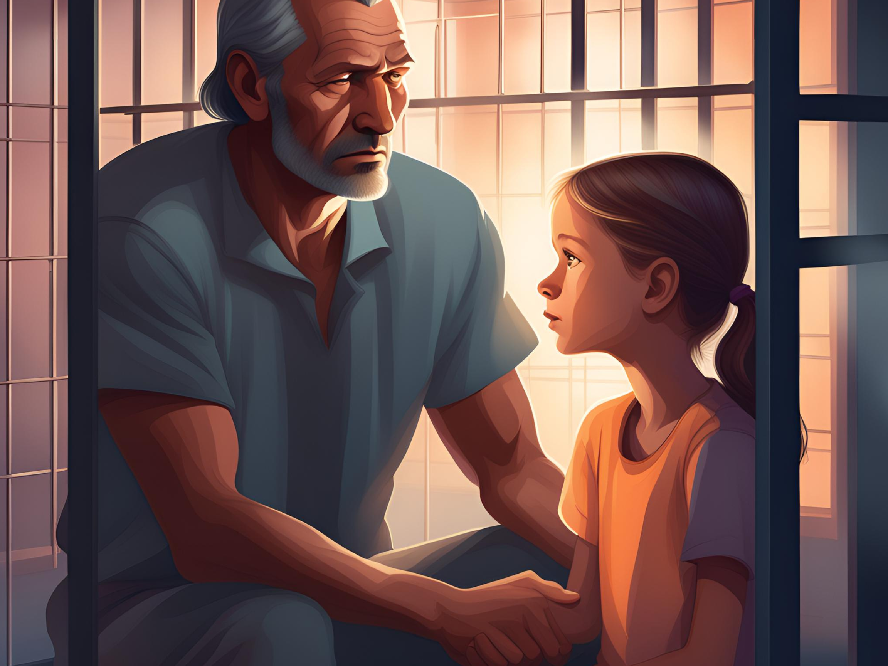

Impact On Children's Health
What Can We Do?
Studies show that children with incarcerated parents are more likely to develop behavioral, physical, and mental health problems than their peers, according to reports from Kristin Turney, a sociologist at University of California-Irvine.
Reportedly, children with an incarcerated parent were three times more likely to have behavioral problems or depression than children without an imprisoned parent, and at least twice as likely to suffer from learning disabilities, ADD/ADHD, and anxiety.

There are opportunities and resources availible in many DOC facilities across the country that offer educational programming. I believe that presenting more parent positive classes would be a great start to helping these families heal, and providing them the resources to become stronger in the face of these challenges.
DOC facilities offer parenting classes for incarcerated individuals, but what are the actual statistics of incarcerated individuals actually participating in these programs? How readily available are these programs for those individuals upon release?
I believe bringing awareness to these sociological problems will help get resources to those who can and want to utilize them.